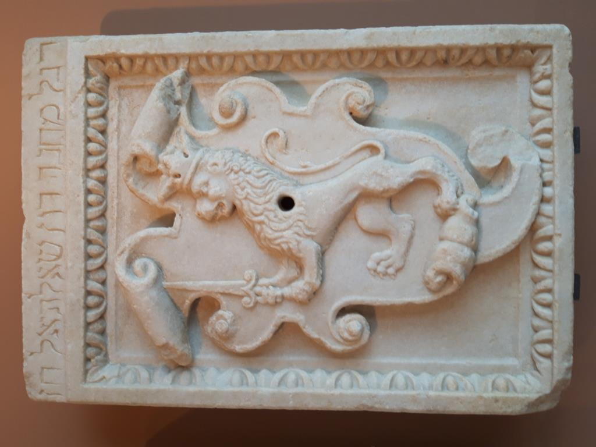

The research project “The Jews of Crete: Reconstructing an Absence, Narrating a Presence” focuses on the Jews of Hania, the largest Jewish community in Crete during the 19th and 20th centuries. Drawing upon written, oral and visual sources, the project examines the life of the community during the turbulent decades preceding World War II, as well as the ways the memory and heritage of the Jews of Hania have been managed following their physical extermination in 1944.
MORE

MAPS
Choose one of the following maps

Late 19th century - 1944
At the turn of the 19th to the 20th century, the Jewish presence in Crete was primarily centered in the city of Hania. It was a small community of approximately 500-600 people. The once-thriving community of Heraklion had declined by late 18th century. For Rethymno there are no systematic references ...

1944 - 1999
In the early hours of May 20, 1944, the Jews of Hania—about 250 men, women, and children—were arrested by the German occupation forces. ...
1999 - Today
The restoration of the Etz Hayyim Synagogue by Nikolas Stavroulakis in 1999 marked the beginning of a new era, one in which the history of the Jews of Hania began to resurface. ...
FAMILIES - MULTIMEDIA